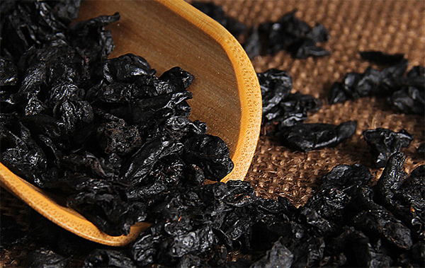
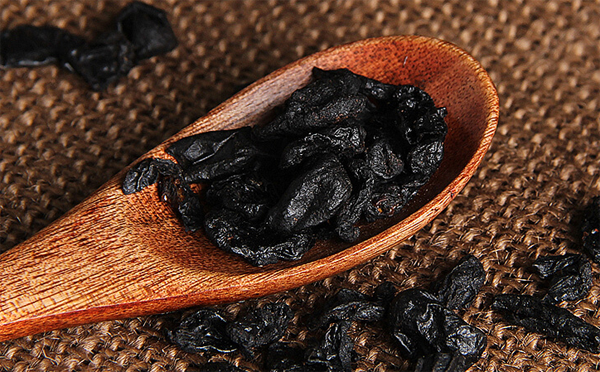
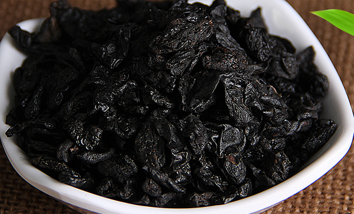
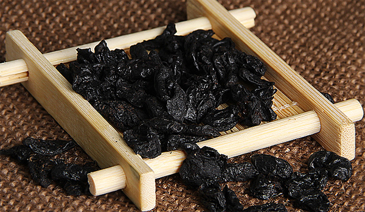

酒萸肉别名山萸肉、药枣或肉枣。它是一种常见的中药，具有养肾益肝的功效，同时还具有预防心血管的作用，可治疗遗精阳痿、头晕目眩、尿频等疾病，下面我们具体来了解酒萸肉的功效与作用。
1、保护心血管系统
酒萸肉最主要的功效为保护心脏功，给心肌输送营养，增加人体的心输出量，增大心肌的收缩性。对心脏功能会有明显的提高，同时它还具有预防高血压高血脂的功效，防止人体的动脉硬化。心脏功能弱的患者服用以后在既可以提高心脏功能，又减少冠心病和动脉硬化发生的几率。
2、止汗收敛

酒萸肉是一味具有止汗收敛的中药，对于大汗虚脱、虚汗不止的症状有很好收敛止汗作用。体虚冒虚寒的人群服用酒萸肉可缓解出汗现象，如果配合龙骨、牡蛎一起服用效果更佳。对于汗出不止的症状，可以用15克酒萸肉、15克白术、30克牡蛎和龙骨，煎水服用。
3、固经止血
如果女性月经量多，而且出现体虚的时候，可以用酒萸肉泡水，或者熬汤的时候加入酒萸肉，它具有固经止血的功效，可以有效的改善月经量大的症状。
4、益精补肾

酒萸肉具有补肾益精的功效，可以保护和提高人体的肾脏功能，预防肾脏类疾病，是男性补肾的一味良药。对于遗精、尿病、阳痿、早泄等症状有很好的预防和缓解作用，对于肾虚的患者，如果将酒萸肉和补骨脂、熟地一起服用，疗效更好。
1、补肝养肾

酒萸肉既补肾又护肝，可以有效保护和提高肝肾的作用，适合肾气不足的人群。对于肝肾功能弱而引起的头晕、耳鸣、四肢无力、腰酸背痛等症状有良好的效果，酒萸肉和杜仲、枸杞、熟地一起使用滋补肝肾的效果更好。
2、增强免疫力
酒萸肉具有提高免疫力的作用，可以抑制细菌入侵体内，它里面含有的萸总苷、熊果酸可以有效抑制淋巴系统的病变，哭加快人体血清素的形成，对人体的免疫功能有促进的作用。
3、抗菌消炎

酒萸肉具有抗菌消炎的作用，它对二甲苯、醋酸、蛋清等有毒物质引起的不适有抑制作用，可以有效减少对肾上腺细胞的伤害，还可以抑制葡萄球菌、肠球菌、痢疾杆菌等菌类，可以治疗腹泻痢疾。
结语：酒萸肉的功效与作用有很多，它具有保护心血管的功能，还可以降血脂，降低血清甘油三酯、胆固醇的含量，抗动脉硬化的作用，同时可以止血、消炎、补肾养肝。